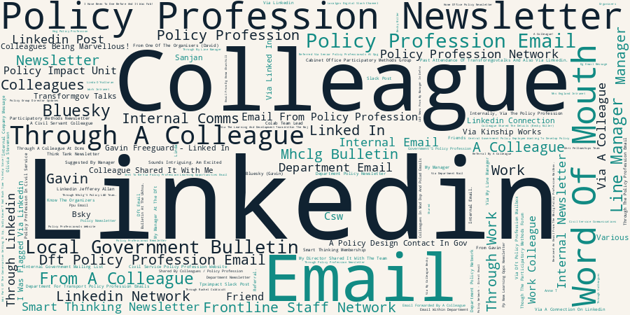

Applicant data
What is your gender?
| Female | 144 |
| Male | 87 |
| Prefer not to say | 6 |
| Non-binary | 1 |
What is your ethnicity?
| White - English / Welsh / Scottish / Northern Irish / British | 122 |
| White - Any other White background | 33 |
| Prefer not to say | 12 |
| Asian / Asian British - Indian | 12 |
| Black/Black British - African | 10 |
| Other Mixed / Multiple ethnic background | 7 |
| Asian / Asian British - Any other Asian background | 7 |
| White - Irish | 7 |
| Other ethnic group | 7 |
| Mixed / Multiple ethnic groups - White and Asian | 5 |
| Black / Black British - Caribbean | 4 |
| Asian / Asian British - Bangladeshi | 4 |
| English / Welsh / Scottish / Northern Irish / British | 2 |
| Mixed / Multiple ethnic groups - White and Black Caribbean | 2 |
| Asian / Asian British - Pakistani | 1 |
| Mixed / Multiple ethnic groups - White and Black African | 1 |
| Asian / Asian British - Chinese | 1 |
What is your age?
| 26-35 | 111 |
| 36-45 | 67 |
| 46-55 | 28 |
| 18-25 | 21 |
| 56-65 | 9 |
| Prefer not to say | 5 |
| 65+ | 1 |
Which organisation / government department do you work for?
| Department for Transport | 14 |
| Ministry of Justice | 12 |
| Cabinet Office | 11 |
| Defra | 10 |
| MHCLG | 9 |
| Home Office | 7 |
| DHSC | 5 |
| Ministry of Housing, Communities and Local Government | 5 |
| HMRC | 5 |
| Department for Education | 4 |
| DESNZ | 4 |
| Department for Business and Trade | 4 |
| Nesta | 3 |
| Attorney General's Office | 3 |
| DCMS | 3 |
| DWP | 3 |
| Institute for Government | 3 |
| Department for Environment, Food and Rural Affairs | 3 |
| Public First | 2 |
| Ministry for Housing, Communities and Local Government | 2 |
| Apolitical | 2 |
| DSIT | 2 |
| Social Care Wales | 2 |
| Greater London Authority | 2 |
| Croydon Council | 2 |
| UKHSA | 2 |
| DfT | 2 |
| Infected Blood Compensation Authority | 2 |
| DfE | 2 |
| London Councils | 2 |
| Cancer Research UK | 1 |
| Various | 1 |
| Connected by Data | 1 |
| Ministry of Housing Communities and Government | 1 |
| Richmond and Wandsworth Councils | 1 |
| NSSIF / Home Office | 1 |
| West Midlands Combined Authority | 1 |
| The Pensions Regulator | 1 |
| Perago | 1 |
| EasyJet | 1 |
| Adur & Worthing Councils | 1 |
| United Nations | 1 |
| Careers & Enterprise Company | 1 |
| DCMS / iwill movement | 1 |
| Russell Group of Universities | 1 |
| NEC Digital Stuio | 1 |
| None - we are an SME climate and nature / advocacy network. | 1 |
| Department for business and trade | 1 |
| East Hampshire District Council | 1 |
| Camden council | 1 |
| LB Hounslow | 1 |
| Housing Quality Network (HQN) | 1 |
| Oxford Insights | 1 |
| Digital Statecraft Academy | 1 |
| Luton Council | 1 |
| Made Tech | 1 |
| The Carbon Trust (moving to Imperial Policy Forum) | 1 |
| Basildon (Borough) Council | 1 |
| East West Rail | 1 |
| Basildon Borough Council | 1 |
| Ealing council | 1 |
| Livework Studio | 1 |
| NayaOne (although leaving to join a think tank) | 1 |
| Cambridgeshire and Peterborough Combined Authority | 1 |
| Money and Pensions Service | 1 |
| My own consultancy (Kompass Consulting) - former SCS (DWP and Cabinet Office) | 1 |
| Department of Science, Innovation and Technology | 1 |
| Liverpool City Council | 1 |
| Researcher at Birmingham City University; Associate Lecturer at University of the Arts (UAL); freelance art curator for Torridge District Council | 1 |
| Department for Environment Food & Rural Affair | 1 |
| University of the Arts London | 1 |
| Projects by IF | 1 |
| Register Dynamics | 1 |
| The Capability Lab | 1 |
| Office Of Rail and Road | 1 |
| The Mayors office for policing and crime | 1 |
| Policy Lab UK | 1 |
| UK Health Security Agency (UKHSA) | 1 |
| OKRE | 1 |
| UK Home Office | 1 |
| department for transport | 1 |
| Department for Tranport | 1 |
| DVSA | 1 |
| Ministry of Housing Communities and Local Government | 1 |
| Henry Smith Foundation | 1 |
| Na | 1 |
| Sheffield Policy Campus / Department for Education | 1 |
| IPPR North | 1 |
| Green Alliance | 1 |
| Centre for Social Justice | 1 |
| UK Health Security Agency | 1 |
| Centre for London | 1 |
| Office for Zero Emission Vehilces | 1 |
| Genomics England (Owned by DHSC) | 1 |
| Champions for Social Change Ltd / University of Greenwich | 1 |
| Department of Transport | 1 |
| Self employed (policy and service design trainer) | 1 |
| Active Travel England | 1 |
| Department for Transport (Centre for Connected and Autonomous Vehicles) | 1 |
| ofgem | 1 |
| Ex Researcher Scottish Gov | 1 |
| DFE | 1 |
| Universities Policy Engagement Network (UCL) | 1 |
| IBCA | 1 |
| UPEN/UCL | 1 |
| TPXimpact / Defra | 1 |
| Government Digital Service, DSIT | 1 |
| Ofsted | 1 |
| UK SPACE AGENCY | 1 |
| MOD CAP SP | 1 |
| DEFRA | 1 |
| defra | 1 |
| HM Treasury | 1 |
| Department for Transport (Government Policy Fast Streamer) | 1 |
| Michelle Reeves Consulting | 1 |
| Ministry of Defence | 1 |
| Centre for Ageing Better | 1 |
| Ofgem | 1 |
| CPS | 1 |
| Welsh Government | 1 |
| Lewisham Council | 1 |
| NHS England | 1 |
| Ministry of Housing, Communities and Local Government (MHCLG) | 1 |
| Association of Chief Executives | 1 |
| MHCG | 1 |
| Teesside University | 1 |
| University of Lincoln / Scottish Government | 1 |
| Ministry Of Justice (MOJ) | 1 |
| Policy Lab | 1 |
| Home Office, CoLab (Policy and Innovation Lab) | 1 |
| Economic and Social Research Council | 1 |
| London Coun | 1 |
| GDS | 1 |
| Champions for Social Change Ltd. / PhD researcher at university of Greenwich | 1 |
| Department for Education DfE | 1 |
| UK Research and Innovation | 1 |
| Local Government Association | 1 |
| City st George's, University of London | 1 |
| Kinship Works | 1 |
| Ministry of Housing, Communities, and Local Government | 1 |
| Department for Environment Food and Rural Affairs | 1 |
| Office of the Public Guardian | 1 |
| Electoral Commission | 1 |
| Digital design for HMRC (via Netcompany) | 1 |
| Gatsby Charitable Foundation | 1 |
| TPX Impact (very soon!) | 1 |
| Capstone Advisory | 1 |
| Environment Agency | 1 |
| London Borough of Lambeth | 1 |
| The Mile End Institute | 1 |
| Westminster city council | 1 |
What is your job role?
| Central government policy profession | 135 |
| Other | 36 |
| Central government other profession | 28 |
| Local government policy profession | 16 |
| Third sector (e.g. charity) | 12 |
| Think tank | 10 |
| Academia | 9 |
| Local government other profession | 7 |
Please list any ways we can accommodate your accessibility or inclusion needs
- I have Dyspraxia (primarily affects handwriting) and some hearing difficulties I am undergoing treatment for. It would be useful to be at the front of any room where speakers are present. I partly rely on lipreading when I cannot fully hear so a clear sight of speakers is helpful.
- Mobility scooter, but can walk a bit and transfer into a normal seat
- Some breaks (ADHD)
- A quiet room/other space to sit in when too overwhelming
- None needed
- I use hearing aids and have a sight impairment and if there are presentations I like to be near the front.
- Put food aside with my name on it
- If there's a quiet room to decompress that would be helpful but no worries if not.
- Availability of quiet space
- clear pre-brief instructions. Minimal pre-reading. Easy to join without admin.
- all ok
- I'm totally blind, so if I'm selected to participate, I would appreciate discussing accessibility arrangements with someone beforehand.
- /A
- None, thank you
- I have slight mobility issues so as long as there are seats it's ok
Please list any dietary requirements
| Vegetarian | 30 |
| Pescatarian | 5 |
| Halal | 5 |
| Gluten free | 4 |
| Vegan | 4 |
| No Pork | 2 |
| Shellfish Allergy | 1 |
| No Nuts | 1 |
| Gluten Free Please | 1 |
| No Carbohydrates Or Shellfish As I Have An Allergy | 1 |
| Halal/Vegetarian | 1 |
| Vegetarian, Allergic To Sesame, Walnuts And Pecans | 1 |
| Halal Or Vegetarian/Vegan | 1 |
| Dairy free | 1 |
| No Fats/Oils E.G. Mayo. No Bread. | 1 |
| No Egg | 1 |
| I Am Pescatarian. | 1 |
| Vegeterian | 1 |
| Halal Or Veg | 1 |
| No Pork. | 1 |
| Vegetarian (No Fish) | 1 |
| Veggie | 1 |
| No Dairy | 1 |
| No Saturated Fats Or Oils | 1 |
| Gluten And Dairy Free | 1 |
| Coeliac Disease | 1 |
| Lactose Intolerance | 1 |
Would you like to speak to us about a partial bursary (travel, accommodation, child care, etc)?
| No | 240 |
| Yes | 13 |
Are you able to help out on the day as a volunteer?
| Maybe (tell me more) | 133 |
| No | 101 |
| Yes | 19 |
Would you like to attend either of the event socials?
| Post-event (same day as event) | 160 |
| Both | 74 |
| Pre-event (night before) | 19 |
In your own words, please tell us why you would like to attend the event
- Looking for a fresh approach to policy-making process and influencing, learning and sparking of others. Also a look at the barriers - especially cross dept and cross sector, where too often it is a zero-sum game.
- It discusses topics I enjoy discussing
- To listen and to build community with people that believe (albeit its many challenges) the work government can deliver.
- So I can network with other like minded professions, and have some dedicated time to think about policy as a profession, outside day to day work
- I'm a senior policy manager at Nesta, and I lead our wider policy programme called Options for the UK - I also run our policy conference called Policy Live. The unconference format is really appealling to me. We are always looking for new ideas and to build and strengthen our networks; I'd value the opportunity to network with a set of policy professionals, as well as talk to some of our thinking, and hear from others on theirs.
- I work on both public participate in policy making, and policy making for local/national political party contexts.
- Love the policy space, love talking about policy, love meeting other policy wonks
- As an early career policy professional my main goal for the next couple years is to just get the policy forming mindset right, both by learning more about different policy areas through reading and listening to specialists at events/ conferences but also through understanding the thought process that goes into anticipating what good policy looks like and the different factors involved
- I work in digital policy and I know of Gov camp, so I am interested in seeing how this works.
- To compare notes and discuss practical ways to achieve community empowerment & system reform
- Want to meet others across policy landscape to exchange ideas, discuss and learn from each other.
- I'm using a great deal of participatory policymaking in my work and want to see how you run it!
- Connect with other designers working with policy and learn more about opportunities for design in policy.
- Very interested in policy + design having worked within this space for a few years. Currently trying to build this practice more in Wales.
- Because it's when people come together in these informal spaces that creativity comes alive!
- I work at the intersection of young people's lived experience and government policy, focused on how we build policy that genuinely reflects young people's lives and gets to the root cause rather than the presenting problem. I am drawn to Policy Camp because I want honest conversations with people who are inside the machine about what works, what could work better, and how we design policy that is more joined up across departments and systems.
- To work with other organisations in similar spaces
- As a Service Designer working in often central government projects I'm always working in or around policy, and forever interested in how to bring Policy closer to projects and increase transparency of policy design
- We are launching a new SME climate and nature advocacy collective in June. Our goal is to bring the SME-voice into high level advocacy (a space where we understand it has been historically underrepresented due to barriers we are helping solve) to give policymakers the confidence and knowledge to create ambitious and effective environmental policy. We would like to help represent the UK’s SMEs at your wonderful event, sharing our perspectives and insights with your wonderful policymakers.
- I LOVE GovCamp. Every time I've been it has reminded me of the amazing privilege of being a policy professional and I've come away inspired and energised which is so precious in a working environment which can feel staid and demoralising. Hopeful that some of the GovCamp magic might be present here too
- Keen to explore cutting edge policy tools and techniques and to share best practice
- Oxygen and breathing space, perspective and networks to get back to HQ and challenge the status quo
- As a young policy professional working for a rural authority, it would be a great opportunity to learn from and share with a practitioners from central and other government orgs and understand different ways of approaching shared challenges - particularly as I am working on local government reorganisation - learning from others is vital for making such a significant public service reform a success.
- As a policy design professional I would like to connect with others shaping the field to share approaches , challenges, opportunities for future policymaking
- To learn from others working in the policy field and to share what I have learnt during my time in policy.
- HQN provides training, networks, and consultancy to housing professionals across the country. We have a network of over 300 member organisation. Our work focuses on the day to day realities of delivering housing services by all levels of local authorities and housing associations. I'd love to attend this event to bring the operational perspective of government policy change that we hear from our members. HQN plays an important role in supporting operational teams to unpick high level policy changes, and I believe a stronger relationship between ourselves and policy makers would improve the effectiveness of policy design.
- Because the team run excellent gov and gov-adjacent events in GovCamp and DeliverCon, which are valuable opportunities for good people to get together and brainstorm things that could genuinely facilitate positive gov change. Having a policy camp sounds incredible, and I'd love to see where it goes.
- I run the Global Policymaking Community on Apolitical, where conversations focus on different tools/approaches for the craft of policymaking around the globe. A large share of the Community's membership works in the UK policy profession. I would like to attend PolicyCamp to make sure that new/innovative approaches to policymaking in the UK are shared more globally, and that global approaches I'm seeing are shared with folks working in the UK.
- Intrigued by the idea of an unconference in such an important area.
- To share learnings across local and national government in particular
- I work between two strategic reform programmes - Places for Growth and Test Learn and Grow - with a focus on how we engage in place, including the frontline, communities and local authorities to influence national policy making. My role is all about creating the space for teams across gov to innovate, try new things and unblock challenges quickly. Essentially bringing together policy and delivery to create better outcomes for citizens. I'd love to join this day to hear from others working across gov on how they implement innovation in their own roles, what barriers they might come up against, and take away potential ideas and solutions into my day job. I'm also based in Scotland so the chance to spend time with other colleagues from across government is hugely helpful to building networks and bridging across departments, and the wider public sector.
- I transitioned into policy design from another discipline. I'm still very young in the field, so I am keen to learn and explore with peers intervening in systems.
- Having started my career in the non-profit sector, I know first hand the challenges and thrill of developing policy in real contexts, solving the right problems, advocating for our citizens. As a consultant, I now get to see first hand with my public sector clients the importance of co-designing policy alongside design, technology, and operations colleagues. I would love to support policy innovation more in my career and in my role as a trusted advisor.
- I am in the climate policy team at Carbon Trust, where I work with those in government working on climate policy. I am about to join Imperial Policy Forum in their climate team - working to connect Imperial academics with those in government. I am ex-Civil Service where I was a policy professional, and so would love to attend to contribute to the conversation on latest ways of working in the policy space.
- I am a fairly new policy officer in my role. Most of my work focuses on local government reorganisation and devolution advocacy for Basildon Council (who I work for), but we are working towards a general policy reset and alignment with Thurrock to ensure that when we merge we are prepared for incoming changes. I have recently taken on some new duties in my role to reflect this, including around policy research/insight and development for senior officers.
- Having worked in central government for most of my career I'm now in a role which is focused on legacy/social impact of a major infrastructure project. I've been fascinated by this new perspective on different tools/levers to achieve meaningful impact at community level and would like to share some of this learning. I'm also keen to stay connected to the policy community, hear about new ideas and build my network.
- I'm really interested to be in a this space, to come together to discuss key issues, exchange best practice, and explore shared challenges in a supportive and informal environment.
- As a service designer (part of a multidisciplinary team) I’m always looking to connect with professionals from the industry and learn from them.
- I’m interested in joining because my work focuses on complex societal and governmental challenges within the Dutch public sector. As a Strategic Designer, I work with various Dutch government organisations on policy-related issues, including immigration and detention, where I help bridge policy, implementation, and lived experience. I’m particularly motivated to exchange perspectives with international peers, learn from approaches developed in the UK context, and explore how design and innovation can strengthen policy making in sensitive and high-impact domains. I hope to contribute practical insights from my experience working on public sector transformation projects, while also gaining new methods, networks, and inspiration that can support more human-centred and effective policy development.
- In my role, I support the design and development of tools and products for policy. I spend most of my time thinking about current needs in the policy space, while also honing my own research and analysis skills. I'd love to attend this event to explore what the future of policymaking could look like.
- I've worked at the intersection of the public sector, policy and innovation (both in government and in the private sector) for nearly 15 years. I think policy camps and other similar initiatives are great and would like to attend. I'm leaving the private sector to move to a think tank, and I'm actually happy to just volunteer if it would help.
- To expand my policy development knowledge, meet other policy professionals and gain perspectives from those working in a range of contexts/departments.
- I am a former policy professional turned data strategist turned freelancer - would love to share my motivation for this shift and talk about the benefits of good data for policy making.
- To learn to make better policy
- I have work in Policy and Public Service Transformantion in Thailand and now I’m working in UK, keen to learn more about this so in the future I want to amplify the knowledge globally
- My role is Head of Policy for a Welsh regulator and sponsored body to the Welsh Government. I'm keen to build a network and challenge my thinking and approaches to help create a real difference in our policy work
- I am interested in innovative policy design methods
- I am leading a policy team and keen to build my network and learn more a out how others lead policy areas
- As someone working in policy in a difficult and changing environment, with the threat of Reform lingering and the Everton window sliding ever to the right, I love the idea of a Policy Camp as an opportunity to connect with fellow policy peeps and explore how we might be able to do what we do but better.
- To learn from others about innovation in policymaking
- I plan to run an Unconference, so would be fantastic to see a professional one in action!
- To learn about tackling policy challenges.
- It will be good to meet policy oriented folk in a camp style environment and to see if the discussions are similar in topic and tone to the other gov camps.
- I've been in a policy role within a strategic authority for a bit over a year now, and previously was in the charity sector working on participation in policymaking - keen to create space to think about how bridges between these roles and perspectives are built for better policy formulation and delivery.
- I'd love to talk about how government can build stronger institutional memory around policy capability
- I am a Policy Advisor and I would like to use this opportunity to network with people in similar roles
- Interesting new format for approaching policy discussion. Great opportunity to connect with other policy professionals.
- My role is Head of Policy for a social care regulator and sponsored body of the Welsh government. I'm keen to connect with other policy professionals to learn and think differently about how we embrace some of the big cross system policy challenges.
- I would like to meet with other policy professionals to see what is going on in the policy world
- I am interested in talking to other policy professionals and having discussions about current policy challenges and having unstructured discussions
- I'm excited to have the chance to meet other people working across the policy system, at different levels, to hear and share new ideas. It sounds like a really energising format and will no doubt be a great opportunity to exchange insights.
- I would like to learn more about good internal policymaking (I recognise this is different to external policies but think there would still be lots of cross-over e.g. stakeholder engagement) through chatting with people working in different areas and departments.
- Keen to connect with a community of thoughtful people, each of us bringing our unique perspectives together to collectively tackle a range of very real policy challenges. A valuable opportunity to step away from our own day to day agenda, and contribute to a wider range of policy areas - and in turn to use that experience to make connections with others, be challenged to think differently, and inspire our own work at OKRE supporting the entertainment sector in their impact.
- I am approx. 9 months into working in policy and I am keen to explore what it means in different contexts, and to learn from others with more or different experiences.
- I want to be involved in cross-Gov discussion about Policy and Design
- Sounds much more valuable, dynamic and engaging than being talked at for hours like most traditional conferences.
- I am setting up a new policy directorate in the Department for Transport.
- To learns from the experiences (challenges and successes) of my peers in the policy profession in an organic (but slightly unusual) way. To hear candid reflections. To meet other policy professionals and expand my professional network.
- I am part of a DG Private Office (so working with/around policy) but have been out of the Policy Profession itself for a few years now. I am keen to re-join the profession and get back to policy making. This course would be a great opportunity for me to refresh my skills, knowledge and confidence.
- Having the opportunity toi discuss policy options and methods in a place where we don't have departmental vested interests.
- My PhD was in coproduction and I see these sorts of events as crucial to bringing some of those findings into policy environments.
- Recently joined the DfT as a project delivery specialist working within the policy space and I'd really like to understand the area better to best support the policy specialists I work with :)
- Sounds like an interesting opportunity to meet different people in Departments and Agencies across government and understand how their experience of policy differs from mine - and what I can learn from that.
- It sounds really interesting as a format for learning and practicing policy skills in a social and dynamic environment. I've been developing my skillset a lot over the last 3 years but in the same policy environment, so this seems like an opportunity to test and refine it further with insight and support from others.
- It sounds interesting, good way to connect with people dealing with lots of different challenges, and a different form of event I could learn from.
- To meet other policy professionals and to share policy ideas and learnings
- I'm trying to improve my policy skills and broaden my prospects in the field to gain promotion. This opportunity would enable me to explore outside the norm other possible policy areas to consider and enable me to build my networks following completing my apprenticeship.
- I am firmly committed to exploring better ways of policy and involving people in decisions that matter to them. In my day job, I lead on policy for the Pride in Place Programme, a novel £5.8bn programme which puts decision-making power into the hands of 284 communities across the country. Outside of my day job, I'm part of the Participatory Methods Forum and have been thinking about how we can embed participatory and deliberative approaches into our policymaking to make better decisions. Keen to connect with and learn from others!
- To connect with policy officials x-gov to learn more about co-design and innovative policy developmeng
- I want to engage in different types of conversations that don’t happen day to day in my working field. I work in funding and would feel as though this would benefit me in how I work.
- To learn from peers across government
- I came into Policy after 20 years of working frontline in community work, and I'm passionate about bringing together those with lived experience of how policy hits the ground and amplifying their voices. I'd love to network and hopefully meet more people like me.
- Networking with other policy people
- Been in the think tank world for 2 years now, and policy creation is probably my 'weaker' aspect - I'm more a researcher, but would like to build on this
- Policy shouldn't be used to put out fires but to solve systemic issues and I would like to know more about how this could be done and what good policy design looks like
- To meet and relate with other policy professionals and know and understand tools that will help increase work efficiency.
- I love thinking and talking about how policy making works and why it doesn't - and I like that this event will both surface interesting questions/themes on this generally, and offer practical opportunities to help
- Network with policy professionals across government and invite fresh perspectives on policy challenges I am currently working on.
- Concept of taking part in a participant led event is really exiting, I want to meet more people with different views and opinions and learn from them!
- My research is primarily on improving policymaking practice so very interested to contribute and see what comes out in discussions
- I’d like to attend Policy Camp because it feels like a great chance to step outside my day-to-day work and learn from others tackling similar challenges. I’m particularly interested in hearing different perspectives and practical ideas I can take back and apply in my role. I also like the collaborative nature of the event — it seems like the kind of space where you can have honest conversations, share experiences and come away with fresh ways of thinking about policy
- I am currently working for the infected blood compensation authority as a content designer. A huge part of my role is translating complex policy into content that is accessible and trauma informed for a marginalised group.
- The Infected Blood Compensation Authority (IBCA) is leading on designing a compensation service that is user centred and iterative (test and learn). As a policy lead, my role is to support the design and delivery of the service by developing, testing, iterating and delivering policy that responds to the objectives of the organisation and the needs of its users. The unique environment of this compensation service has created new challenges and opportunities to approach policy development from a design and user-centred perspective. This enables us to narrow the gap between policy and delivery, and ensure that policy is informed, supported and iterated in contact with the live service and its users. It would be great to be able to share some of the learnings I have developed in my current role and hear insights from other policy practitioners across sectors to continue to develop new approaches to meet these challenges.
- Having worked in various policy roles in DfT for 5 years I have built a good understanding of operational policy decision making but I would like to continue my learning by being part of of 'unconferenced' event to learn from peers and to help understand potential solutions to some challenge policies I am current working on regarding the UK juxtaposed border.
- Get a better understanding of the policy ecosystem and meet my peers
- Really keen on cross government collaboration opportunities and sharing resources.
- I lead on 'open government' and I'm interested to hear ideas from across government
- I am a Principal Service Designer often helping to create space and advocate for Policy Design. We currently lack formal process or dedicated resource for Policy Design at our organisation and it is fragmented depending on area, project and sponsor.
- I have attended a previous civil service unconference and found it hugely enriching. I would across policy/academia/practice/lived experience. My PhD is on how prison-impacted leaders can promote system-change in criminal justice policy.
- I work on developing and delivering policy on EV charging infrastructure. I would be interesting to hear from others their experiences developing policy and things they have learnt.
- It sounds like a less intimidating way to find out more about policy
- I'm a former civil servant/SCS (23 years) and now work as freelance trainer and coach primarily focusing on policy and service design for civil servants and public sector colleagues. To ensure my training is relevant and worthwhile, I do my best to keep up with the latest thinking on policy design and delivery. I would love to attend this event to hear from and share with policy professionals. I have previously attended UK GovCamp and GovCamp Cymru and really enjoyed taking part in the discussions and hopefully adding value as much as gaining it.
- Active travel faces many policy difficulties
- I'm interested in understanding both the breadth of what "policy responsibilities" look like in practice across government, picking up ideas that I can use for my work, and considering future career possibilities
- I would like to attend this event to learn more about how policy is developed and how decisions are made throughout the policy process. I think it would be a great opportunity to build my knowledge, develop new skills, and gain practical insights that I can apply in my current role. I’m also hoping to take away ideas and learning that will help me shape and strengthen the objectives in my Personal Development Plan. It would also be a valuable opportunity to network with colleagues and policy professionals, learn from their experiences, and build connections that could support my development and broaden my understanding of different policy areas.
- Opportunity to meet and collaborate with policy professionals in other contexts, new ideas and new thinking
- I'm new to policy and think this would be an excellent way to learn from others.
- I want to learn what others do around policy development outside of the way my department thinks about it
- Opportunity to network with others on live issues and support my development
- Hear from others about what’s new, what works and what’s less successful in the world of policy making
- As ARI Policy Coordinator at UPEN I work in a range of ways with policy makers (national, regional, and local), but having only moved into the policy engagement space in the past year I think this would be an opportunity for me to immerse myself in the current state of the sector, learn from and connect with a wider range of policy makers, and bring my own expertise regarding research-policy engagement mechanisms to bear on conversations.
- I am a content designer and good policy makes for better content
- As part of UPEN, my specific brief is to connect public policy professionals with expertise and evidence and strengthen the infrastructure. Understanding motivations and barriers to engagement are really useful and interesting.
- learn more about policy
- I am a behavioural scientist working in the government digital service, and before this I worked for many years in academia as postdoctoral research fellow in various institutions (including UCL). I would be interested to participate in this event as it seems like a good informal and constructive discussion on policy, which would be very useful for me given my more applied / research role in government
- I am at the intersection of Policy, DDaT, Product and Delivery Management and often find gaps/barriers for easier interaction and cross-pollination between all these. This conference is the perfect antidote for that challenge being able to see things from different perspectives and of course network with peers as determined to solve problems and identify solutions and opportunities to improve and deliver concrete, tangible benefits to society at large, and in particular to those from vulnerable cohorts and households, disenfranchised groups and underrepresented communities.
- Open discussion with like-minded civil servants
- Interested to make connections with other policy professionals across government, see how others are doing policy and improve my own thinking and approach to policy.
- I'd like to reinvigorate my policy skills
- I believe that everyone has something to share and you learn most in a collaborative, non-hierarchical environment where you can work through problems together, so this sounds right up my street.
- Share ideas and learning with people working on policy from across government.
- I've not been involved in an un-conference event so I would like the opportunity to experience this structure and also potentially pitch a session
- I am currently developing a new policy programme and the camp will enable me to hear from and learn from other policy professionals and help my personal development
- I work in a cross-species policy team (reintroductions of non-native species) and policy is developed in silos on a species-by-species basis. We reinvent the wheel each time we start a new species. The nuances of each species are different but concerns are broadly the same - environmental impact, welfare, public confidence and support, licensing pathways, stakeholder engagement etc. There must be a way of designing a 'one size fits all' process wheel for future reintroductions and I'd love to hear others' solutions.
- The best policies are those that take account and represent the most factors possible - with this requires techniques developed over time. Being able to constantly learn and bounce ideas off others I believe makes for an effective policy official.
- Work on solving complex policy problems as part of the day job but in a very specific subject area and from a specific angle. Would like to broaden my horizons to think about problems in different ways and engage with a wide range of topics across government and wider.
- I think it would be a great opportunity to learn from and connect with other policy practitioners.
- I'd like to attend to learn about new and collaborative methods of policy design and tools I could use in my daily job.
- Learn more about policy
- I lead the HMRC Policy Professionalism and Ministerial Advice team, and I'm doing a Policy Doctorate in how we drive policymaking effectiveness in the SCS at the University of Bath
- I've done unconference once in my own department and thought it was brilliant, I've been trying to have other team away days repeat that ever since. I'd like to try it in a completely foreign policy context to get a better grasp of the policy skills separated from the subject expertise, and then I'd like to run something like it for my own division.
- It sounds like a great way to meet others working in policy and compare learnings. I am particularly interested in learning how policy is developed in practice an affects citizens on the ground
- I want to join Policy Camp because I am keen to improve and build on my policy skills after over five years working in the Civil Service. During this time, I have developed practical experience, but I am now looking to strengthen my understanding of policy design, analysis, and implementation in a more structured and academic setting.
- I'm new to the civil service after a career in the NGO sector and I'm hoping to use this experience to better understand policy in practice to support my development in my new role.
- I have participated in an Unconference before and found it hugely engaging and useful. I'm a keen advocate for modern methods of policymaking within MHCLG, including as part of the Policy Profession, and am keen to continue to make connections with policymakers across government and understand new ideas and techniques.
- I'm developing evaluation training for policy professionals and would like to understand their experience of evaluation in more depth
- Active policy professional looking to share ideas and increase understanding
- Policy is too often developed in silos, and I think that's one of the most persistent problems in how government works. Policy Camp appeals to me because it cuts against that - shaped by the people in the room rather than a pre-set agenda, so conversations reflect what's actually hard right now. I want to contribute and to learn: I'm working through real challenges I'd benefit from testing with peers, and I'm equally interested in what others across government have found genuinely works in practice. The unconference format is the right environment for that kind of honest, practical exchange.
- I am an early career policy professional and have a lot to learn. This event presents a unique opportunity to get insights from people with a wealth of experience from across the policy profession, helping to inform my own approach as I discover new challenges.
- I've attended a GovCamp unconference in the past and found it very inspiring but very broad: I would value attending an event with a more specific policy focus. I enjoy the emergent nature of discussion in an unconference setting and am intrigued to participate in this with fellow policy makers
- I would be keen to engage with policy in a delivery focussed way and explore how policy deconstruction can lead to real world benefits.
- Passionate about policymaking, current deputy director for some elements of tax policy
- To contribute to, and share understanding and learning on the current policy landscape and to discuss policy innovation, key strategic challenges, and delivery with other policy professionals
- I would like to learn more from other policy professionals about best practice
- I am keen to connect with other Policy Professionals both across government and external to Government. I am fairly new to the policy world, so keen to learn from more experienced professionals and gain a better understanding of the prominent issues being addressed in the policy space.
- I am interesting in developing my policy skills and applying them to practical scenarios
- I would like to attend the event to learn and collaborate with others on how policy can be developed and new ways to approach policy issues. Also keen to meet other in the policy profession whether that is inside government or outside, keen to promote better cross-sector collaboration to solve policy issues.
- I am designer, working closely with policy colleagues on circular economy and digital sustainability in Defra, and would like to grow my understanding of and skills in different approaches to policy making, testing, prototyping etc
- To improve my knowledge about policy development and expand my network
- I want to do everything I can to close the feedback loop between policy design and delivery
- I believe service design and policy should work together to ensure that service level whenever there's a service level decision that requires or supports a specific policy, they get translated into policy, and the other way around, too. On the other side, both disciplines benefit from each other due to the different angles they bring to the work.
- I work in policy design innovation
- I work in policy in the Cabinet Office - almost all of what I've learned has been on the job and within the Civil Service. I worked in the third sector previously, but not on policy. I would be keen to hear from those who have worked in different policy spaces across government, but more so what policy work looks like outside central government - such as third sector, thinktanks, local government etc. The unconference format is ideal for exchanging ideas and sharing experiences, offering a structured space to hear directly from other policy practitioners and generate practical ideas that I can apply directly back into my role.
- I am interested in how Policy design feeds into service delivery. I want a better handover and codesign process
- I'm interested in working closer with Policy colleagues in my role as a service designer and hope to get some insights into how policy is currently created.
- I'm a service designer interested in how policy is formed and how that translates into services and other gov interventions
- NHS England being abolished and I am preparing for the transition into the DHSC
- I love an unconference and I'm learning to be a policy advisor
- Looks like a good opportunity to network with other policy professionals and learn new things which I can then use in my own role.
- I am interested in learning more about creative policy solutions across Government
- To consider policy from a wider perspective, and to meet policy professionals from other government depts + outside the Civil Service.
- I want to increase my policy knowledge as I am new to the work.
- I would like to enhance my knowledge and skills in relation to policy making, especially in tackling very challenging policy areas in a complex landscape. Would be grateful to learn about tips on how to breakdown very big complex issues into tangible deliverables. Enhancing my knowledge and skills would improve my performance and help ensure better policy making for the public.
- Expand policy skills and network
- I would like to attend Policy Camp because i am genuinely passionate about improving how public policy is designed and delivered in complex systems. In my current role working on resilience policy, while developing my skills in systems thinking and policy design in a creative and human -centred approach, I am constantly exploring challenges that do not have answer( "wicked problem"). I have found that some of the most valuable insights come from honest conversations with people who bring different perspectives and experience. The unconference particularly appeals to me because it creates space for honest conversations, shared learning and constructive challenge. I hope to learn from diverse perspectives such, contribute my own experience, and leave with fresh ideas that can improve policy outcomes
- I worked in EU policy making and would like to meaningfully connect with likeminded people in the UK
- As a current UKRI Policy Fellow, I want to enhance my understanding of policymaking, which could help me in my current project.
- I have been working in the Civil Service and policy for 5 years, and I am always keen to improve skills and understanding all the breadths of policy and cross cutting work in government.
- Get insights from others transitioning into policy facing roles in Government and get a sense check on the challenges and benefits
- All of the answers to our policy problems like in cross-sector collaboration. I'd love to be part of this process, building nuanced, pragmatic, workable solutions together.
- I'm a Principal Service Designer in Defra I'm interested in the overlap between policy design and service design and delivery and how we can align more about problem identification, user needs and outcomes.
- As a Senior Policy Advisor in the Civil Litigation Costs and Funding Team at the Ministry of Justice, attending a policy conference would provide a valuable opportunity to deepen my expertise and strengthen my ability to deliver impactful policy outcomes. My current role involves navigating complex issues at the intersection of access to justice, litigation funding, and cost reform. A policy conference would allow me to engage with leading practitioners, academics, and policymakers, helping me to stay at the forefront of emerging trends, evidence, and best practice both within the UK and internationally.
- I am interesting in how Policy can work across departments and would enjoy this opportunity to meet peers from different areas.
- Many policymakers are hungry for new ways to tackle complex problems, and unconferences like this one can be excellent first steps to gathering the most important ingredient - collaboration with like minded people!
- Sounds like an incredibly interesting and unique opportunity to collaborate with other policy professionals and delve into some complex problems - something which is fundamental in my current job role!
- I would like to attend Policy Camp as it is relevant to my work. I work in the ESRC Public Policy and Engagement team, where I support the UKRI Policy Fellowships (as the investment manager for the Natural Hazard and Resilience cohort) and UKRI Policy Internships. I would be keen to learn more about what our fellows are experiencing first-hand in policy environments and to connect with others to share and learn about effective approaches to knowledge exchange and impact across the policy ecosystem.
- I have been working in the policy field for the past 5 years. It would greatly help my own development , my work and the overall development of my wider team if I am able to attend this camp.
- Central Government Policy employee wanting to develop policy
- I am really keen to spend a day thinking about policy outside of the pressures of the normal workday and to meet and network with policy professionals from a range of other organisations.
- I would like to attend Policy Camp because it offers a unique opportunity to learn from colleagues across government in a collaborative, participant-led environment. The unconference format is particularly appealing as it encourages open discussion, diverse perspectives, and practical problem-solving around real policy challenges. I am keen to share my own experiences, learn from others’ approaches, and build new cross-government connections. I believe the insights gained will help me improve my work, contribute more effectively to my team, and support better outcomes for the people we serve.
- broaden my understanding of policy development and learn about interesting new methods and priorities
- To collaborate with people right across the public sector, share challenges and think a bit differently for a day.
- I loved the first policy camp unconference I went to, met so many fascinating people and I loved the democratic approach to organising the agenda and drawing on all of the expertise in the room - so rare with most conferences. I work at the intersection of charity/academia/policy (social and criminal justice focus), so these events are a fantastic way to break down silos and learn from others across these sectors to bring about systemic, transformational change.
- To develop my own understanding of policy practice across wider government
- Sounds interesting - and new to the profession!
- Develop my policy skills, meet and build community around this, appreciate the skills that make someone good at policy, understand what policy people are thinking about as part of my job to influence that in Test, Learn and Grow
- I ma passionate about policy and keen to attend
- I'm interested in attending this event to gain a deeper understanding of policy developments, options and advice that can help inform and motivate the work I do day-to-day. I'm keen to meet new people working in similar spaces, learn from others and stay curious about policy work.
- I am a fairly new entrant into the policy profession (<18 months). I feel this event will help expand my understanding of the ways of working and expectations of the profession as well as help expand my network of colleagues. I also hope to be able to share my own experiences and views on the profession in practice which may prove useful to my fellow attendees.
- I’m keen to attend Policy Camp at UCL as I’m at an early stage in my policy career and want to broaden my perspective beyond my immediate role. I’m particularly interested in the opportunity to meet other professionals and have open, practical conversations about the challenges we face in delivering policy in complex, high‑pressure environments. The Ministry of Justice has lurched from crisis to crisis and it can be easy, during these periods of intense pressure, to focus inwards and downwards and prioritise basic delivery. I want to take the opportunity to look up and out and learn from other departments and sectors to see how they approach policy challenges. It's an opportunity for me to step back and exchange ideas with peers facing similar challenges in other contexts.
- It sounds like a really good opportunity to exchange ideas and learning across central government local government and think tanks, and to step away from the day job!
- I’m keen to attend Policy Camp because of its focus on sharing real experiences, exploring what works in practice, and generating practical ideas to improve policy development and delivery. As someone new to policy, I see it as a valuable opportunity to learn from others working on similar challenges and bring those insights back into my role. I transitioned into policy in January 2026 from a frontline probation role, which has given me a strong understanding of how policy decisions translate in practice, both where they succeed and where challenges can arise. This perspective motivated my move into policy and continues to shape my approach. Since joining policy, I’ve particularly enjoyed the strategic aspects of the role, including designing changes that are both ambitious and workable. My earlier involvement in change projects within HMPPS strengthened my interest in improving service delivery and achieving tangible benefits for practitioners and service users. I would also welcome the chance to contribute this frontline perspective to discussions at Policy Camp.
- I have been working on data and AI Governance for years now and looking for practical ways of improving what's currently unfolding so would love to talk about this with like minded people.
- Considering pitching a session
- I would like to increase my understanding of policy professionals' perspectives on how science can best be used to improve policy outcomes.
- I'd like to attend because I'm the AI ethics lead in a new programme launched this year in MHCLG. My role is ensure local government is adopting AI ethically. I have done a lot of sector engagement but I'm struggling to decide how to support local government in a way that is actually helpful in relation to ethical AI.
- Opportunity to explore policy problems beyond the day-to-day and build connections beyond the department
- I work across London Local government in policy and would like to speak to others about data and research skills and performance and improvement.
- I am new to Policy and this would be an excellent way to get to know other people in the area, build skills, and insight.
- To network with fellow participants and strengthen my policy delivery related to e.g. communicating effectively and making effective decisions
- I've been a policy professional for a number of years and have a keen interest in using a range of tools and perspectives in the policy making process - placing the end user at the heart, co-designing where possible and bringing in a range of stakeholders. I've used open policymaking approaches in projects I've led and am keen to hear and learn other approaches.
- I am a policy professional in central government and always looking for how we can work better and smarter with colleagues.
- I am looking to develop my skills in identifying and resolving policy problems and challenges.
- Fairly new to my policy role within the public sector having come from a policy role in the charity sector, so wanting to understand more how policy is done in the public sector.
- In my work in user-centred design of digital public services, I often find that we are constrained from doing what users need by pre-existing policy. I would love to learn more about the process of policymaking and advocate for user-centred policy design.
- I want to experience some policy discussions that are genuinely constructive rather than a series of opposing arguments. I am hoping it is a model that I could use to reset some of the policy discussions and events which I host and contribute to.
- After many years working in a design research space (and some further study in policy) I'm moving back closer to policy and keen to connect with innovative policy ideas in practice and have some interesting conversations!
- Connect with like-minded people
- I’ve done a masters in public policy and management graduating in 2020. I’ve seen skinned a lot of experience in various roles and local government in public health adult social care equity and inclusion and housing which could all provide inside into making policy that is more insightful. I now want to transition my career towards a role in policy.
- Inform better policymaking in Government
- I work in Policy Partnerships at the Mile End Institute, connecting academics with opportunities to have impact and change policy. Before this, I worked for Members of Parliament. I would be very interested in how this event can be used to explore practical approaches between policy theory and delivery and practice.
- I'm working back in the public sector, and it's a brilliant opportunity to attend whilst working on the Test, Learn and Grow programme to learn and meeting some new people. It would be my first ever Policy Camp. Thanks!
Please let us know how you heard about Policy Camp

Would you like to sign up to our newsletter?
| Yes | 211 |
| No | 42 |